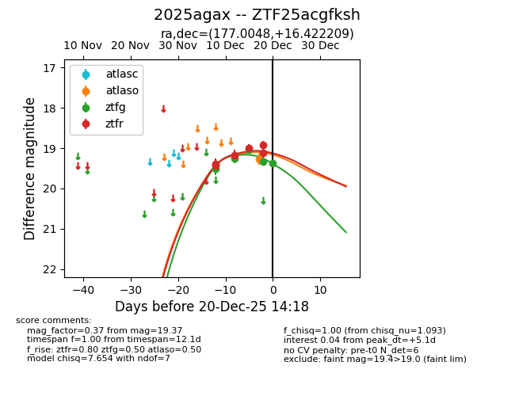
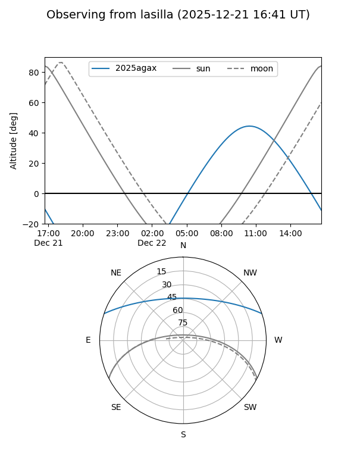
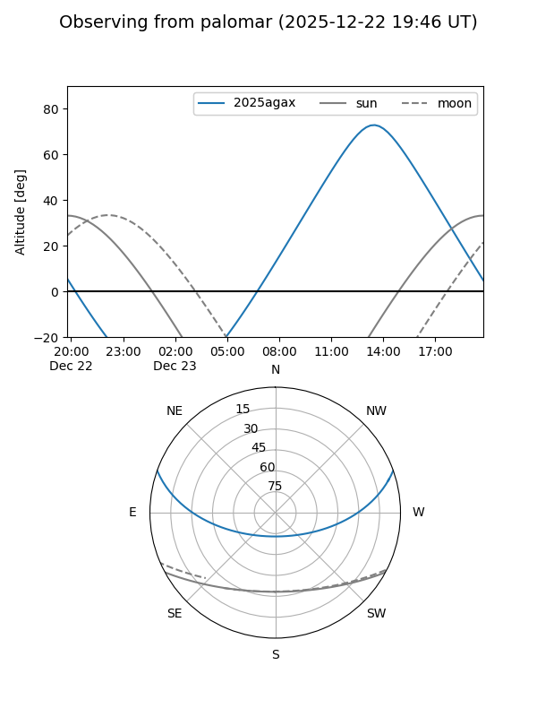
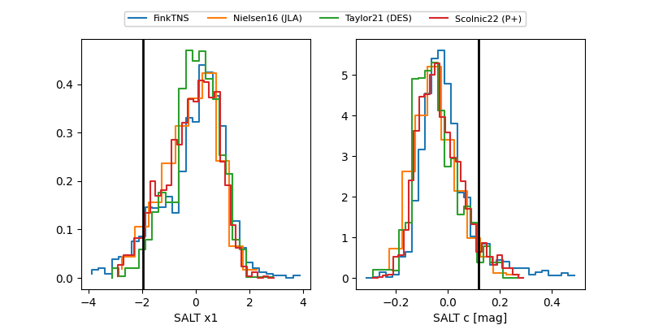

2025agax
Target 2025agax at 2025-12-22 21:16
Aliases and brokers:
FINK: fink-portal.org/ZTF25acgfksh
Lasair: lasair-ztf.lsst.ac.uk/objects/ZTF25acgfksh
ALeRCE: alerce.online/object/ZTF25acgfksh
TNS: wis-tns.org/object/2025agax
YSE: ziggy.ucolick.org/yse/transient_detail/2025agax
alt names
ZTF25acgfksh (ztf,fink_ztf)
2025agax (tns,yse)
ATLAS25pzr (atlas)
Coordinates:
equatorial (ra, dec) = 177.0048,+16.42221
equatorial (HMS+DMS) = 11:48:01.15,+16:25:19.95
galactic (l, b) = (245.7704,+71.82664)
Flags:
confirmed ia
Photometry:
last atlaso=19.27, ztfg=19.57, ztfr=19.23
1 atlaso, 7 ztfg, 9 ztfr detections
Lightcurve

Visibility


Additional plots
